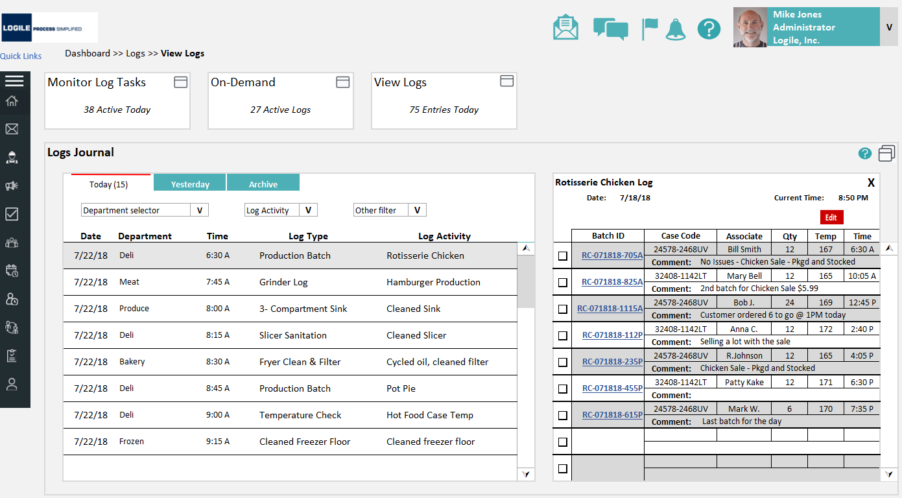
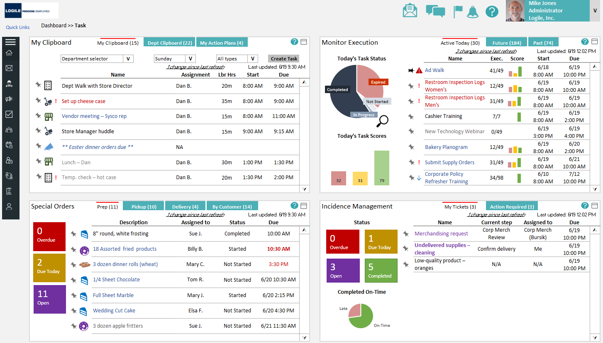
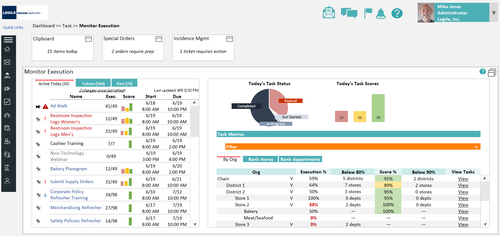
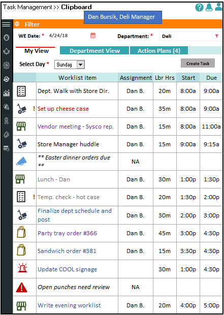
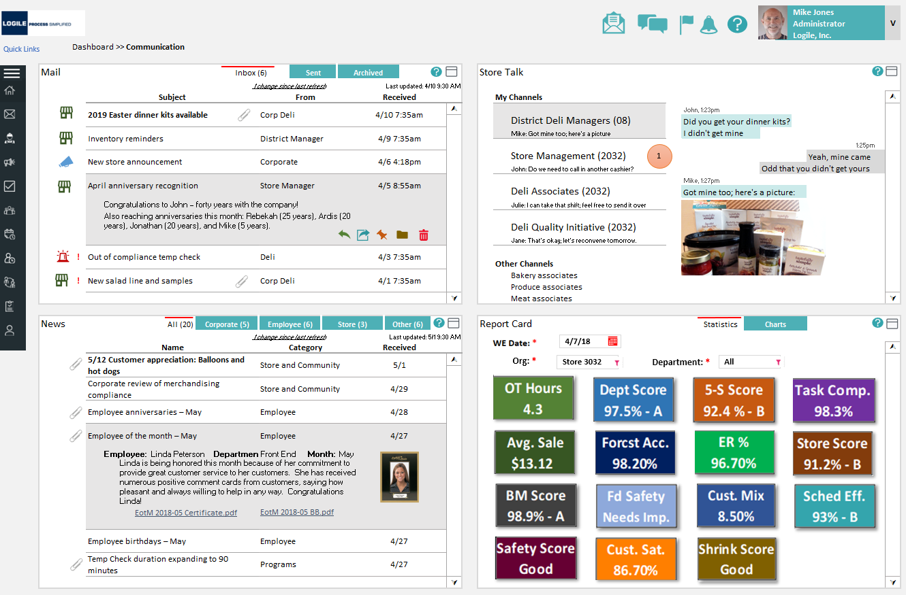
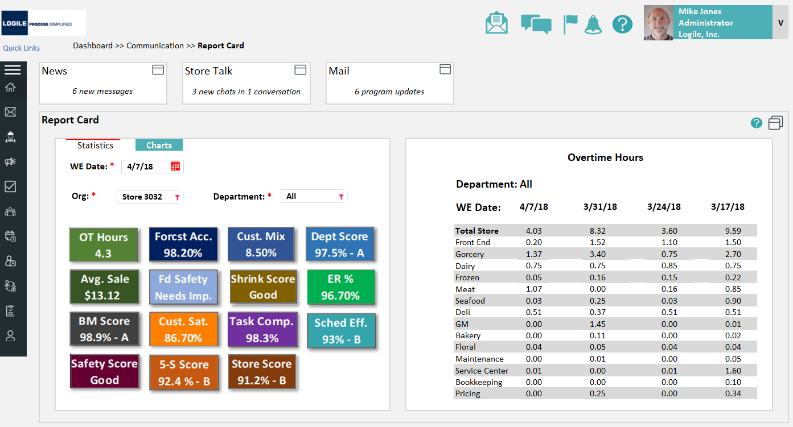
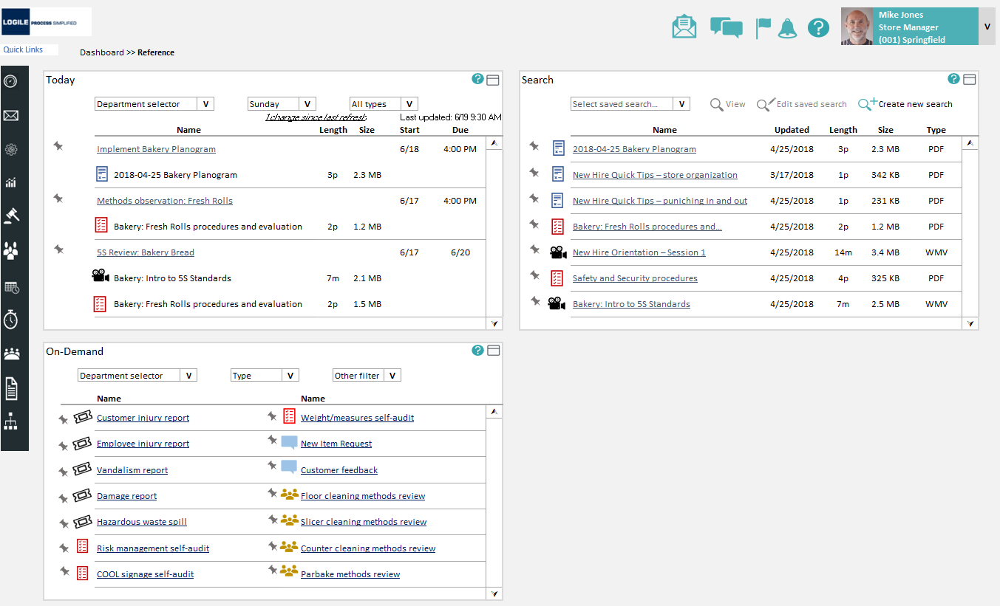
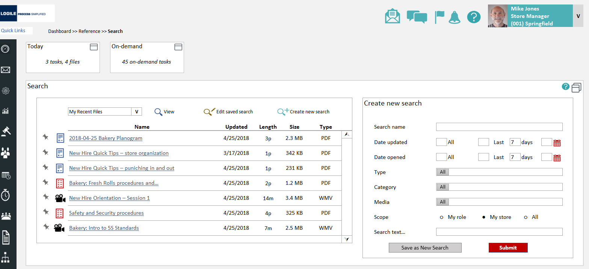
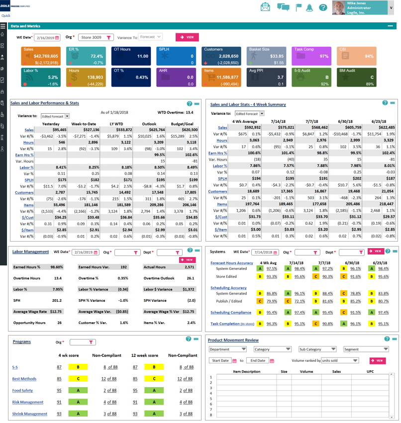
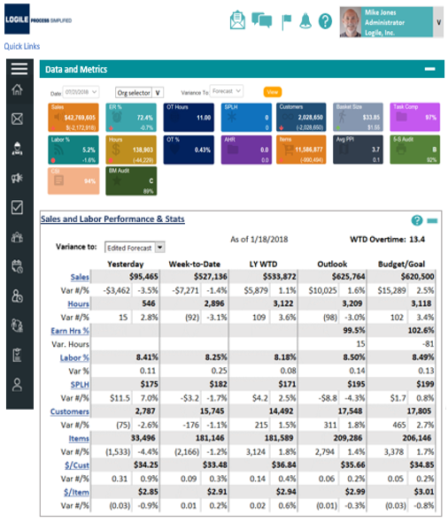

Food Safety serves the people who keep a grocery store compliant: store managers, department managers in deli, bakery, meat, produce and grocery, the associates who do the work, and the food-safety and compliance leaders who answer for it. It replaces brittle paper logs and disconnected checklists with one system that schedules the work, captures the entry, scores the result, and surfaces risk in real time.
Package a complete, configurable food-safety program, logs, supporting tasks, training and reference, communications, and dashboards, that drops into the Logile modules a retailer already owns or stands on its own. The defining constraint: compliance work is dense and regulated, but it has to be fast enough to do between tasks, on the sales floor, by a high-turnover team.
Make food-safety compliance something a store team can actually keep up with, the system guides the work, captures proof, and turns it into a score a manager can act on, instead of a binder no one reads until an inspector arrives.
As the UX designer on the Food Safety program, I owned the application design, the information architecture across modules, the screen-level workflows, the data-dense dashboards, and the responsive behavior from desktop down to a phone in an apron pocket.
This wasn't a greenfield product. It had to live inside Logile's existing platform and design language, reusing the modules retailers already ran, so the work was as much about fitting in cleanly and configuring for many clients as it was about designing new screens. I partnered closely with the food-safety subject-matter expert who defined the program, and with product and engineering to phase delivery.
Food safety is managing risk, the CDC estimates roughly 1 in 6 Americans gets sick from foodborne illness each year. For a retailer, a lapse is brand damage, lost sales, fines, and litigation; under the Park Doctrine, executives can be held personally liable. Yet most stores were running this high-stakes program on paper. The fix wasn't a tidier checklist, it was rethinking how a store team works and proves compliance.
Temperature checks, sanitation, production batches, all captured on clipboards that were easy to skip, easy to lose, and impossible to roll up. Leadership couldn't see compliance until something went wrong.
Federal, state, and local rules differ by site, and a missed log isn't a paperwork problem, it's fines, failed inspections, recalls, and personal liability for leadership.
Deli, bakery, meat, and produce each ran their own routines with no shared view and no real-time alerts. A problem in one department stayed invisible until an audit surfaced it.
High-turnover floor staff had to memorize procedures and rules. Without guidance built into the work, execution was inconsistent and onboarding was slow and expensive.
This was a productized program built for many retailers, not a single client, so discovery leaned on deep domain expertise and the regulatory landscape rather than one store's workflow. I worked from the food-safety SME's program definition, the rules every site has to meet, and the operational reality of how store departments actually run.
A food-safety subject-matter expert defined the program, every log, routine, and the score behind it. I translated that into screens and flows.
Federal, state, and local requirements vary by site, so the program had to be configurable, not hard-coded. That shaped the IA from the start.
How departments run their day, who does what and when, and how this had to slot into Logile's existing labor, task, and scheduling modules.
Honest constraint: as a packaged solution, this was designed from domain expertise and the regulatory landscape rather than direct fieldwork in a single store. I treated the SME's program as the source of truth and designed for configurability, so each retailer could shape it to their own departments, sites, and local rules.
If logging is slower than the work itself, it doesn't happen. Entries had to be quick, glanceable, and doable on a phone between tasks, not a desk activity at the end of a shift.
A pile of completed logs tells a manager nothing fast. A score, a grade, and a red/yellow/green map of departments tells them exactly where to spend the next ten minutes.
With high turnover, the system, not the employee, should carry the procedure. Directive tasks and reference docs tied to each log mean the right way is the obvious way.
An associate, a department manager, and a chain leader need different views of the same program. The system had to flex by role and department without fragmenting into separate tools.
Because the program had to integrate with existing modules and ship to real retailers, I structured the IA first, then designed in phases so the foundation could go live while later capability was still being built.
Before screens, I mapped the program onto a clear set of areas, Logs, Tasks, Communications, Reference, and Dashboards, each tied to a stage of the daily routine and to the role that owns it. That structure is what let one program serve an associate, a department manager, and a chain leader from the same system.
Everything reused Logile's established UI language and slotted into modules retailers already ran, labor model, tasks, scheduling. The discipline here was consistency and configurability: new capability that felt native to the platform and could be tuned to each client's departments, sites, and local rules.
The decision that shaped everything: don't just digitize the logs, score them. Every completed routine rolls up into a task score, a department grade, and a store ranking. That turned a stack of paperwork into a single signal a manager could act on, and gave leadership real-time visibility they never had on paper.
One program, five connected areas. The work gets scheduled and logged, the system monitors and scores it, training sits one tap from the task that needs it, communications keep the store aligned, and dashboards turn all of it into a grade leadership can act on, on desktop and on the floor.
The Logs workspace puts the whole loop on one screen: on-demand logs to start, monitored log tasks with live status and scores, a view of active logs, and a running journal of everything captured. A manager can see what's due, what's expired, and today's scores without opening four different places.
Why it matters: the paper binder becomes a live picture of the day, with risk visible the moment a task slips.
Drilling into the journal shows every logged event, department, log type, who did it, when, and any alert, with the detailed batch record beside it: case codes, temperatures, quantities, associate, and comments. This is the audit trail an inspector or a recall investigation needs, generated as a by-product of doing the work.
Why it matters: compliance becomes provable, not just claimed, every entry is traceable and time-stamped.

Food-safety routines run as tasks alongside the rest of the store's labor. The Tasks workspace pairs a manager's clipboard with monitored execution, special orders, and incidence management, each with its own status and score, so the day's food-safety work lives next to everything else a department owns instead of in a separate silo.
Why it matters: food safety stops being extra work and becomes part of the normal task flow.

Monitor Execution turns task completion into objective metrics, today's status, today's scores, and execution percentage broken down by org, store, and department. A leader can rank stores, spot the ones below threshold, and drill straight into the tasks behind a low score.
Why it matters: the program becomes measurable and comparable, accountability that survives across hundreds of stores.

The same program collapses to a focused mobile clipboard: the day's worklist for a department, what's assigned, when it's due, with the urgent items flagged. This is where most food-safety work actually gets done, between tasks, on the floor, not at a desk.
Why it matters: if it isn't doable on a phone in seconds, the log doesn't get made.

Food-safety culture is part of the program, not an afterthought. Communications brings news, store talk, mail, and a live report card together, so performance, alerts, and recognition reach associates where they already work, including print-ready exhibits for the breakroom board.
Why it matters: visible scores and shared updates make food safety a habit the whole store owns.

The report card distills the whole program into scores and letter grades, food-safety score, store score, department scores, alongside the operational metrics a store already tracks. Color does the talking: green is good, yellow needs improvement, red needs action. A manager reads the store's standing in a glance.
Why it matters: a single, familiar grade makes a dense compliance program legible to everyone from associate to chain leadership.

Every routine carries its instructions: method sheets, visual aids, implementation guides, and training videos, surfaced right from the task list and the Reference area. Today's required reading sits next to on-demand procedures, so a new hire learns the right way at the moment they need it.
Why it matters: the system carries the procedure, so turnover stops eroding execution.

A focused search lets staff filter the document library by type, category, media, and scope, my role, my store, or all, and save searches they run often. Procedures, planograms, and training videos are a few keystrokes away instead of buried in a shared drive.
Why it matters: reference only helps if people can find it, so search and scope were first-class, not an afterthought.

The Food Safety program reports into the same Home dashboard and KPI view a store already uses, so its score sits beside sales, labor, and the other measures leadership tracks. A mini-container reports the current grade; drilling in opens the full performance detail.
Why it matters: food safety earns a seat at the table it's measured next to the metrics the business already lives by.

The detailed metrics views pack a lot, status tiles up top, then variance tables across yesterday, week-to-date, and year-to-date. The design challenge was making that density readable: consistent tiles, semantic color for variance, and a clear hierarchy so the eye lands on what's off before what's fine.
Why it matters: enterprise screens are unavoidably dense, the value is in making them legible at a glance.

Food Safety wasn't a place to invent a new look, it had to feel like a native part of Logile's platform. The craft was in restraint: reuse the established components and patterns, keep dense screens scannable, and lean on one consistent status language so a manager reads state the same way everywhere.
Red / yellow / green carries compliance state consistently, on a score, a department, a task, or a map, so urgency is legible before anyone reads a number.
A consistent scoring vocabulary, numeric score, letter grade, and rank, repeats across logs, tasks, report cards, and dashboards so the same idea always looks and reads the same.
Each area is a grid of self-contained containers that can maximize for focus or sit together on a landing page, the pattern that let one workspace hold four jobs without feeling cramped.
The same program scales from a dense desktop dashboard to a focused mobile clipboard, so the people on the floor and the people in the office work from one system, not two.
Working inside an established system is its own discipline: the win isn't a striking new interface, it's capability that feels like it was always there, behaves predictably, and can be configured to each retailer's departments, sites, and local rules without a redesign.
Food Safety shipped as a packaged Logile solution, a complete program retailers can deploy and configure to their own sites and local rules. The shift it delivered is structural: from paper no one could see, to a guided, scored, auditable system embedded in the tools stores already run.
* Outcomes described qualitatively, this was a packaged offering configured per retailer rather than a single measured deployment.
The real result is a change in how a store relates to food safety: instead of a binder checked once a quarter, compliance becomes a daily, visible score everyone from associate to chain leadership can see and act on, and a strong program protects brand, profitability, and the people who could otherwise be held liable.
The biggest leverage wasn't a screen, it was deciding to turn logs into scores, grades, and rankings. That single framing made a dense program legible and actionable for everyone.
Designing inside Logile's system meant reusing patterns rather than inventing, which sped delivery and made the program feel native. Restraint was the right move, not a compromise.
A beautiful desktop dashboard means little if the associate can't log a temperature in ten seconds on a phone. Mobile and speed had to be first-class, not a port.
Serving many retailers with different rules meant the IA itself had to flex. Designing the right seams for configuration mattered as much as any individual flow.
Get into a store. The program was strong on domain expertise; watching real associates run these routines would have sharpened the mobile flows and the entry interactions earlier.
Define success metrics up front. As a packaged offering it shipped without per-store targets; agreeing measurable outcomes early would have made impact easier to prove post-launch.
Pressure-test the mobile entry deeper. The clipboard worked, but the fastest possible logging interaction, gloves on, in a cooler, deserved its own focused exploration.
The program already captures rich, structured data on every routine. The natural next step is using it to predict where a lapse is likely before it happens, nudging the right department before a score slips, rather than reporting after.
As more of the work moves to the floor, the entry experience itself, scan a probe, snap a photo, confirm in one tap, is where the next gains in adoption and accuracy live.
Food Safety was a study in making something genuinely high-stakes feel routine. The win wasn't a flashy interface, it was taking a dense, regulated, easy-to-skip program and turning it into a guided, scored, daily habit that a whole store can see, embedded so cleanly into existing tools that it feels like it was always part of them.